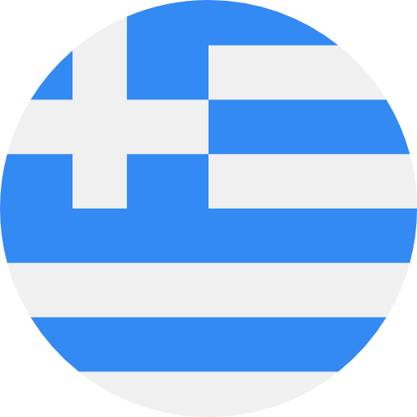

MentoRes
Mentoring and Resources for PhD applications


We are volunteers that provide information and lightweight mentoring to students who want to pursue PhDs in Computer Science and engineering sciences (we are more than happy to answer introductory questions for other disciplines).
If you are a student that wants to pursue a PhD or you are simply interested to find out whether a PhD is the right path for you, feel free to contact us at: phd.mentores@gmail.com.
Backstory
We are #manos and #konstantinos, and we met at the National Technical University of Athens where we completed our undergraduate degrees. During our studies, we both decided that we wanted to pursue PhDs in the United States; however, we found that there were hardly any resources on how to actually do that! We had to research a lot, try a lot, and fail a lot in order to finally get accepted into PhD programs in the US.
Our experience is hardly "unique": hundreds of students go through the same process, doing the same research, trying to find answers to the same questions year after year. In fact, every year, a handful of students reach out to us to try and guide them through the process, which is admittedly daunting.
So, we decided to create this website and make it "official". Our goal is to provide information, and lightweight mentoring to students who want to pursue PhDs in the US. While our knowledge might be more helpful to students in Computer Science/Electrical Engineering who are nearing the end of their degrees, we are more than happy to mentor, give advice, and answer questions from early undergrads and students from other disciplines. As a funny anecdote, #konstantinos didn't even know that you could do a PhD in the US until his third year, which only goes to show the extend of the problem we're trying to address.
Vision
We understand that this alone isn't enough. While this initiave might end up helping some people, it will not solve the underlying problem: there is, at the institutional level, lack of information regarding research and academic trajectories---a problem especially apparent in Greek universities. This directly excludes people who might be a perfect fit for a PhD, as, by the time they are able to gain this information, their profiles aren't "appealing" enough to universities. Understandably, this hits marginalized and less connected students the hardest.
So what is the solution? We don't know. But we want to start a discourse. We want people to talk about the problem and how we can make a change at the institutional level. We would be interested in having a conversation with faculty and administration at universities that face this problem in order to collectively understand the needs of the students and design processes that ensure that information and resources for academic trajectories are accessible to all. If you are affiliated with a university that is affected by this problem feel free to reach out: phd.mentores@gmail.com.
About us
Manos
PhD student at Harvard University working on model-based deep learning. Previously worked on tropical algebra and geometry at the school of Electrical and Computer Engineering at NTUA.